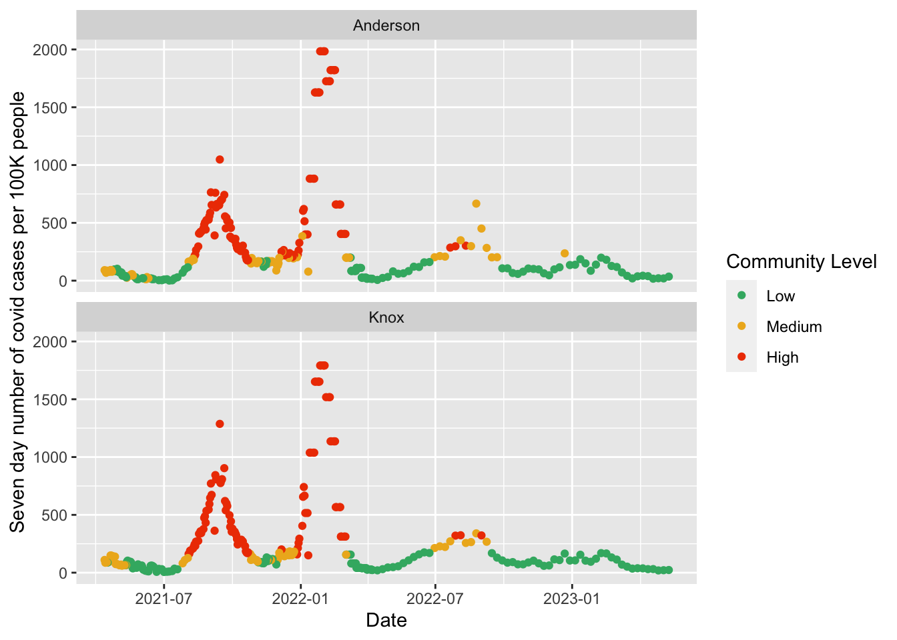
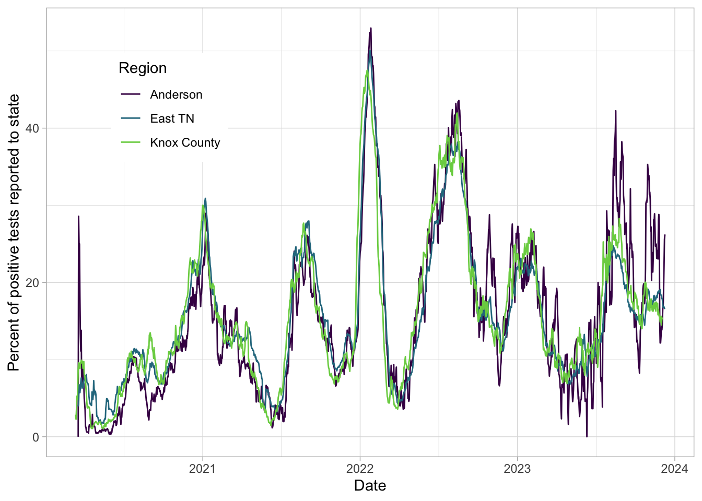

East TN information
The purpose of this is to gather information on how the covid-19 pandemic is progressing in East TN. There are good sites that have info on the pandemic generally across the US and world, but Tennessee as well as local entities put out info that is not captured by these sites.
I am mostly doing this for my own curiosity as a parent in Oak Ridge, TN; though I work in science, I don’t work in epidemiology. Thus, I’m not doing any calculations of future spread, etc. – I’m taking published datasets and plotting them. For datasets that are presented as current conditions but do not have a history, I take a copy of them (usually every six hours) to be able to plot how they change over time.
Use the menu above for information on vaccinations, conditions in schools, and more. This site was last updated on 11:05 AM on Friday April 07, 2023, though many data sources have a lag of a week or more.
As of the last time the data were updated, the 19 regional hospitals around Knoxville had only 27 ICU beds available of 301 total, based on info from the Knox County Health Department.
As of Sat, Mar 04, 2023, 29,225 people have died from covid in Tennessee.
To get a vaccine to protect others and yourself, go to https://www.vaccines.gov/.
The CDC provides two different ways of summarizing covid in a community:
- Community Transmission refers to measures of the presence and spread of SARS-CoV-2, the virus that causes COVID-19. This is used in the blue / yellow / orange / red maps, like here.
- COVID-19 Community Levels refer to the measures of the impact of COVID-19 in terms of hospitalizations and healthcare system strain, while accounting for transmission in the community. This is used in the pastel yellow / green / orange map (red does not exist), like here.
These plots show community spread: how covid is moving through our communities and infecting people, not the effect this has on the healthcare system. The main thing to focus on is the color, though I am plotting the test positivity rate on the y axis (the plots below these show the rise in number of people with new cases per week for similar dates). It may feel hard to distinguish red from orange, but that is largely due to how little orange there is – it’s nearly all red (other people have now started adding purples for even higher spread, but I am sticking with CDC’s palette).

The above plots area about spread of the disease in communities; the plots below are about how at risk the health care system is (see this NPR story). We can also plot using the (Feb 2022) guidelines from the CDC for low, medium, high community level; I’ve also recalculated past data so we can see how it would apply then.

Here are the percent of tests positive, averaged over a week.

Here are the deaths over time associated with covid in East TN (excluding Dec 22, 2021, when there seems to be an error in the state’s death records).

A high level overview of the pandemic in Tennessee as a whole (using Tennessee’s definitions of groups):
| Category | Group | Positive Covid Test | Covid Death | At Least One Vaccination | Fully Vaccinated |
|---|---|---|---|---|---|
| Race | American Indian or Alaska Native | 1/8 | 1/1111 | ||
| Race | Asian | 1/5 | 1/1000 | 56.7% | 48.1% |
| Race | Black or African American | 1/3 | 1/256 | 43.5% | 38.3% |
| Race | Native Hawaiian or Other Pacific Islander | 1/3 | 1/526 | ||
| Race | White | 1/3 | 1/238 | 47.1% | 42.9% |
| Ethnicity | Hispanic | 1/4 | 1/625 | 66.1% | 56% |
| Ethnicity | Not Hispanic or Latino | 1/4 | 1/244 | 56.6% | 52.1% |
| Sex | Female | 1/3 | 1/256 | 65.4% | 59.5% |
| Sex | Male | 1/3 | 1/213 | 58.2% | 52.3% |